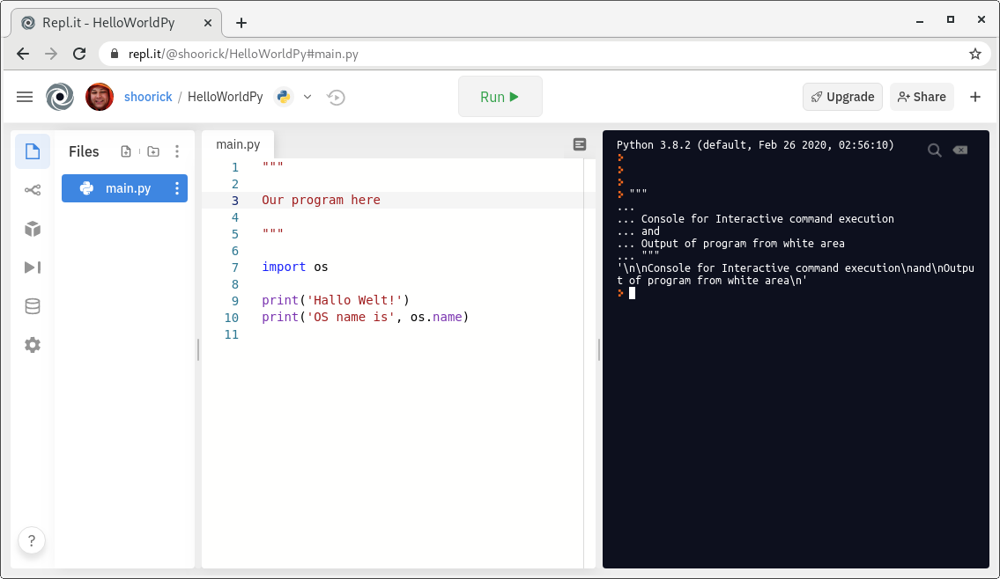
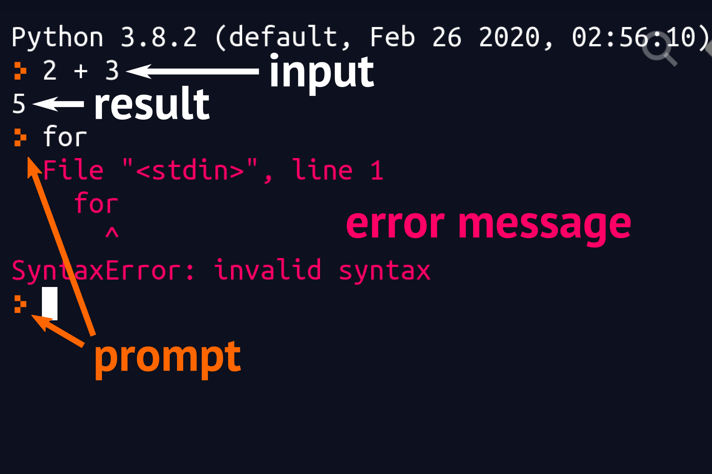
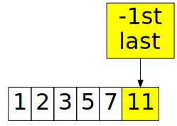
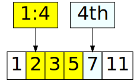
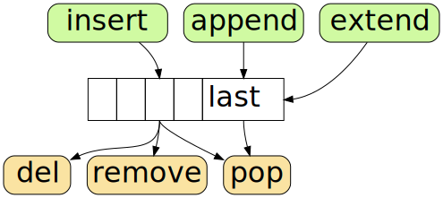

Data processing with Python

help()help()

>>>⮬ prompt
>>> 42 + 24our input ⮭
>>> 42 + 2466 ⬅ result
>>> 42 + 'e'Traceback (most recent call last):File "", line 1, in <module> TypeError: unsupported operand type(s) for +: 'int' and 'str'⮬ error messages
No semicolon ; after single statement
counter = 42
Colon and indent instead of curly braces for blocks
for fruit in basket:# four spaces is recommendedprint(fruit)
Colon and indent instead of curly braces for blocks
for fruit in basket:# four spaces is recommendedprint(fruit)
A ≠ a
name = 'value'

name = 'value'
name = 42

>>> mice = cats = dogs = 3
>>> cats
3
>>> mice = cats = dogs = 3
>>> cats
3
>>> cats = 15
>>> dogs
3

There are only two hard things in Computer Science:
cache invalidation and naming things.
Phil Karlton
Available characters are:
_>>> theSun_and_8_planets = 'solar'
b (single lowercase letter)
B (single uppercase letter)
CapitalizedWords
or CamelCase üê™
lowercase
lower_case_with_underscores
UPPERCASE
UPPER_CASE_WITH_UNDERSCORES
See PEP8
Convention is to use lower_case_with_underscores ‚Äî üêç snake case
for variables and functions
theSun_and_8_planetsthe_sun_and_8_planets>>> global = 'World'
File "<stdin>", line 1
global = 'World'
^
SyntaxError: invalid syntax
>>> help("keywords")
Here is a list of the Python keywords. Enter any keyword to get more help.
False class from or
None continue global pass
True def if raise
| False | None | True | and | as |
| assert | async | await | break | class |
| continue | def | del | elif | else |
| except | finally | for | from | global |
| if | import | in | is | lambda |
| nonlocal | not | or | pass | raise |
| return | try | while | with | yield |
Python 3 allows to use some non-ASCII letters but it’s a wrong way
>>> Öl = 'Barrel.'
>>> print(Öl * 3)
Barrel.Barrel.Barrel.
>>> Ø = 0
>>> Ж = 8
>>> Зима = 'Winter'
>>> ქ = 'khar'
>>> ձ = 'ja'
>>> ж = 'zhe'
>>> ξ = 'xi'
>>> ש = 'shin'
>>> ش = 'sheen'
>>> o = 'Latin'
>>> ο = 'Greek'
>>> о = 'Cyrillic'
>>> օ = 'Armenian'
>>> ჿ = 'Georgian'
>>> print(o, ο, о, օ, ჿ)
Latin Greek Cyrillic Armenian Georgian
>>> × = 'multiply'
File "<stdin>", line 1
× = 'multiply'
^
>>> ⼤ = 'big'
File "<stdin>", line 1
⼤ = 'big'
^
SyntaxError: invalid character in identifier
>>> some = 'thing'
>>> len(some)
5
>>> print(some)
thing
>>> print(some)
thing
>>> print('Any' + some)
Anything
cat is an Object
height = cat.size
result = cat.run(42)
is_relaxed = cat.sleep()
cat is an Object
height = cat.size
result = cat.run(42)
is_relaxed = cat.sleep()
cat is an Object
height = cat.size
result = cat.run(42)
is_relaxed = cat.sleep()
cat is an Object
height = cat.size
result = cat.run(42)
is_relaxed = cat.sleep()
cat is an Object
height = cat.size
result = cat.run(42)
is_relaxed = cat.sleep()
Class →
Objects →
class Animal:
def __init__(self, name):
self.name = name
cat = Animal('Tom')
mouse = Animal('Jerry')int, float, str, list, tuple, dict, range...42, 3.14159265358, 'something', [2, 12, 85, 0.6]...See also docs.python.org/3.7/library/stdtypes
See also docs.python.org/3.7/library/stdtypes
>>> type(42)<class 'int'>
>>> type(42)<class 'int'>>>> type(3.14)<class 'float'>
>>> type(42)<class 'int'>>>> type(3.14)<class 'float'>>>> type('3.14')<class 'str'>
>>> type(some) # variable<class 'str'>>>> type(5 + 0.5) # expression<class 'float'>
>>> some = 'Thing'
>>> dir(some) # or
>>> dir('Thing') # or
>>> dir(str)
['__add__', '__class__', '__contains__', '__delattr__', '__dir__',
... 'swapcase', 'title', 'translate', 'upper', 'zfill']
>>> some = 'Thing'
>>> dir(some)
['__add__', '__class__', '__contains__', '__delattr__', '__dir__',
... 'swapcase', 'title', 'translate', 'upper', 'zfill']
>>> some.swapcase()
'tHING'
Boolean type is used for logical data
Note: the capitalization
Answers have boolean type
>>> type(5 < 2)
<class 'bool'>
>>> type(apple == 'fruit')
<class 'bool'>
>>> bool(7)
True
>>> bool('non empty')
True
>>> bool([2020, 11, 22])
True
>>> bool(0)
False
>>> bool('')
False
>>> bool([])
False
>>> if list_name:
... # do something with list_name
None and False.0, 0.0, 0j, Decimal(0), Fraction(0, 1)'', (), [], {}, set(), range(0)integer number
>>> type(42)
<class 'int'>
>>> 4_294_967_296 # 2324294967296>>> +7_800_775_00_00 # even phone numbers78007750000
>>> 0xC0FFEE # hexadecimal12648430>>> 0o777 # octal511>>> 0b1111 # binary15
Floating point number
>>> 3.14159263.1415926>>> 9.9.0>>> 3e8300000000.0
3e8 = 3 × 108 = 300000000.0 # light speed, meters per second
125e-3 = 125 × 10−3 = 0.125
>>> 6.022e23 # Avogadro constant, mol−16.022e+23
Use name of type as function to convert data
>>> int(3.1415926)3>>> float(42)42.0
>>> 3. + 25.0>>> 3 + 2.5.0
string is the sequence of characters


>>> 'string'[3]
'i'

>>> 'string'.upper()
'STRING'
>>> 'string'[3].upper()
'I'
strstrstrstr>>> 'Generic' or "common"
'Generic'
>>> 'B letter \x42'
'B letter B'
>>> "\x53ame behavior with double quotation marks"
'Same behavior with double quotation marks'
>>> 'Unicode: –ø–∏—Ç–æ–Ω ‚Äî —ç—Ç–æ –∑–º–µ—è üêç Ëõá'
'Unicode: –ø–∏—Ç–æ–Ω ‚Äî —ç—Ç–æ –∑–º–µ—è üêç Ëõá'
C-like notation
\n — new line (LF — line feed)\r — carriage return (CR)\xNN — character having hexadecimal ASCII code NN>>> """
... Multiline strings
... often used as comments
... """
'\nMultiline strings\noften used as comments\n'
>>> '''
... These strings can contain
... 'single' or "double" quotation marks
... '''
'\nThese strings can contain\n\'single\' or "double" quotation marks\n'
C-like notation
\n — new line (LF — line feed)\r — carriage return (CR)\xNN — character having hexadecimal ASCII code NN>>> '\xAB'
'«'
What about small Russian letter “ef”? Its hexadecimal code is 444.
>>> '\x444'
'D4'
What about small Russian letter “ef”? Its hexadecimal code is 444.
>>> '\x444''D4'
>>> '\u444'
File "<stdin>", line 1
SyntaxError: (unicode error) 'unicodeescape' codec can't decode bytes in position 0-4: truncated \uXXXX escape
>>> '\u0444'
'ф'
>>> '\x01f41b'
'ὁb'
>>> '\U1f41b'
File "<stdin>", line 1
SyntaxError: (unicode error) 'unicodeescape' codec can't decode bytes in position 0-6: truncated \UXXXXXXXX escape
>>> '\U0001f41b'
'üêõ'
>>> u'日'
'日'
>>> b'Byte'
b'Byte'
>>> b'Жи-ши'
File "<stdin>", line 1
SyntaxError: bytes can only contain ASCII literal characters.
Just double it
>>> print('\\back')
\back
There are no special characters
>>> r'\back\slash'
'\\back\\slash'
There are no special characters
>>> r'\back\slash'
'\\back\\slash'
>>> r'^\S+ome\regular\expr\e\s\Sio\n{7}'
'^\\S+ome\\regular\\expr\\e\\s\\Sio\\n{7}'
See also re — Regular expression operations
There are no special characters
>>> r'\back\slash'
'\\back\\slash'
>>> r'^\S+ome\regular\expr\e\s\Sio\n{7}'
'^\\S+ome\\regular\\expr\\e\\s\\Sio\\n{7}'
>>> r'C:\Windows\system32\drivers\hosts.txt'
'C:\\Windows\\system32\\drivers\\hosts.txt'
>>> r'''
... TenorI = \context Voice = TenorI {
... \global
... \dynamicUp \stemUp \slurUp \tieUp
... \tempo Moderato
... '''
'\nTenorI = \\context Voice = TenorI {\n \\global\n \\dynamicUp \\stemUp \\slurUp \\tieUp\n \\tempo Moderato\n'

>>> pi = 3.14159265358
>>> f'π is {pi}'
'π is 3.14159265358'
Since 2015 — Python 3.6. See also realpython.com/python-f-strings
>>> 'head ' + 'and' + ' tail'
'head and tail'
>>> 3 + ' is three'
Traceback (most recent call last):
File "<stdin>", line 1, in <module>
TypeError: unsupported operand type(s) for +: 'int' and 'str'
>>> str(3) + ' is three'
'3 is three'
List is a sequence of values

List items can have various types
>>> [1, 2, 3, 5, 7, 11, 'numbers']
>>> empty = []
Index of item is an offset from left edge of list

>>> prime_numbers = [1, 2, 3, 5, 7, 11]

>>> prime_numbers = [1, 2, 3, 5, 7, 11]
>>> prime_numbers[3]
5

>>> prime_numbers[-1]
11

>>> prime_numbers[-2]
7
first:last
>>> prime_numbers[1:4]
[2, 3, 5]
first: without right bound
>>> prime_numbers[1:]
[2, 3, 5, 7, 11]
:last without left bound
>>> prime_numbers[:3]
[1, 2, 3]
::step after second semicolon
>>> prime_numbers[1:6:2]
[2, 5, 11]
::step
>>> prime_numbers[::2]
[1, 3, 7]
>>> prime_numbers[3] = 'R'
>>> prime_numbers
[1, 2, 3, 'R', 7, 11]

>>> line = 'abcdefghi'
>>> line[3]
'd'

>>> line = 'abcdefghi'
>>> line[:3]
'abc'

>>> line = 'abcdefghi'
>>> line[::2]
'acegi'

>>> names = ['Alice', 'Bob', 'Charlie']

>>> names[2][0]
'C'
list>>> help(list)
Help on class list in module __builtin__:
...
| append(...)
| L.append(object) -- append object to end
|
| count(...)
listlist
list
>>> abc = ['a', 'b', 'c']
>>> abc.append('e')
>>> abc.extend(['f', 'g'])
>>> abc.insert(3, 'd')
>>> abc
['a', 'b', 'c', 'd', 'e', 'f', 'g']
list
>>> abc = ['a', 'b', 'c', 'd', 'e', 'f', 'g']
>>> abc.pop(3) # return deleted item
'd'
>>> del abc[1] # return nothing
>>> abc.remove('e')
>>> abc
['a', 'c', 'f', 'g']
Tuple is read-only list
>>> (1, 2, 3, 5, 7, 11)
(1, 2, 3, 5, 7, 11)
>>> (1, 2, 3, 5, 7, 11)[3]
5
>>> wheels = (2, 3, 4, 6, 8)
>>> wheels[2] = 7
Traceback (most recent call last):
File "<stdin>", line 1, in <module>
TypeError: 'tuple' object does not support item assignment
Use parentheses to make a tuple
>>> (2)
2 # oops! It's an integer
>>> (2,)
(2,) # tuple has one item
>>> ()
() # tuple is empty
>>> list((1, 2, 3, 5, 7, 11))
[1, 2, 3, 5, 7, 11]
>>> tuple([1, 2, 3, 5, 7, 11])
(1, 2, 3, 5, 7, 11)
Dictionary is list of pairs key: value
>>> apple = {'color': 'red', 'weight': 7, 'shape': 'ball'}
>>> apple['color']
'red'
>>> apple['shape']
'ball'
>>> apple['color'] = 'yellow'
>>> apple['origin'] = 'Normandy'
>>> f"{apple['color']} apple came from {apple['origin']}"
'yellow apple came from Normandy'
>>> apple['nonexistent']
Traceback (most recent call last):
File "<stdin>", line 1, in <module>
KeyError: 'nonexistent'
>>> apple['nonexistent']
Traceback (most recent call last):
File "<stdin>", line 1, in <module>
KeyError: 'nonexistent'
>>> apple.get('nonexistent', 'none')
'none'
>>> apple.get('nonexistent', 'none')
'none'
>>> apple.get('color', 'none')
'yellow'
>>> empty = dict() # possible but ugly
>>> empty
{}
>>> hollow = {} # better
>>> even = {0, 2, 4, 6, 2, 0, 0}
>>> even
{0, 2, 4, 6}
>>> 5 in even
False
>>> 2 in even
True
>>> dir(set)
['__and__', '__class__', '__contains__', '__delattr__', '__dir__',
'add', 'clear', 'copy', 'difference', 'difference_update',
'discard', 'intersection', 'intersection_update', 'isdisjoint',
'issubset', 'issuperset', 'pop', 'remove', 'symmetric_difference',
'symmetric_difference_update', 'union', 'update']
>>> help(set)
| add(...)
| Add an element to a set.
| This has no effect if the element is already present.
|
| clear(...)
| Remove all elements from this set.
>>> threes = {3, 6, 9, 12, 15, 18}
>>> fives = {5, 10, 15, 20 }
>>> threes.union(fives)
{3, 5, 6, 9, 10, 12, 15, 18, 20}
>>> threes.difference(fives)
{3, 6, 9, 12, 18}
>>> threes = set(range(3, 21, 3))
>>> fives = set(range(5, 25, 5))
>>> threes.union(fives)
{3, 5, 6, 9, 10, 12, 15, 18, 20}
>>> threes.difference(fives)
{3, 6, 9, 12, 18}
>>> threes[2]
Traceback (most recent call last):
File "<stdin>", line 1, in <module>
TypeError: 'set' object is not subscriptable
>>> list(threes)[2]
9
Range is the sequence of monotonically uniformly changing integers — arithmetic progression:
>>> teen = range(13, 20)
Mathematically, t = [13, 20)
>>> teen = range(13, 20)
Mathematically, t = [13, 20)
include 13 and exclude 20
>>> teen = range(13, 20)
>>> teen
range(13, 20)
>>> teen = range(13, 20)
>>> teen
range(13, 20)
>>> for age in teen: print(age, end=', ')
...
13, 14, 15, 16, 17, 18, 19,
>>> for age in teen: print(age, end=', ')
...
13, 14, 15, 16, 17, 18, 19,
>>> teen[3]
16
>>> for age in teen: print(age, end=', ')
...
13, 14, 15, 16, 17, 18, 19,
>>> teen[3:]
range(16, 20)
>>> teen[:3]
range(13, 16)
>>> for age in teen: print(age, end=', ')
...
13, 14, 15, 16, 17, 18, 19,
>>> teen[3::2]
range(16, 20, 2)
>>> for item in range(0, 100, 9):
... print(item, end=', ')
...
0, 9, 18, 27, 36, 45, 54, 63, 72, 81, 90, 99,
>>> for item in range(3, 0, -1):
... print(item, end=', ')
...
3, 2, 1,
>>> for item in range(3, 0, -1):
... print(item, end=', ')
...
3, 2, 1,
>>> before_ten = list(range(0, 10))
>>> before_ten
[0, 1, 2, 3, 4, 5, 6, 7, 8, 9]